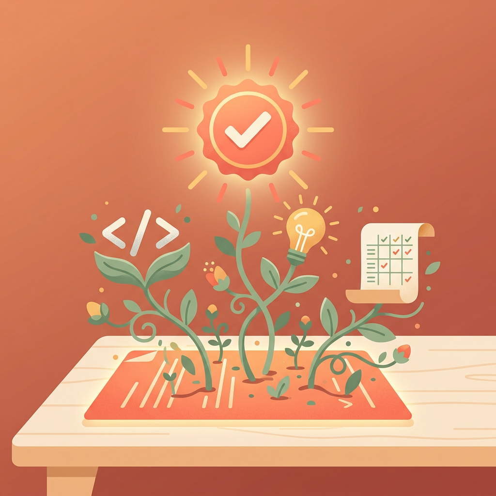
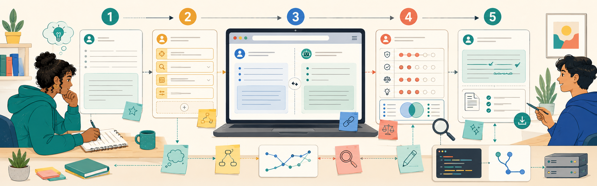
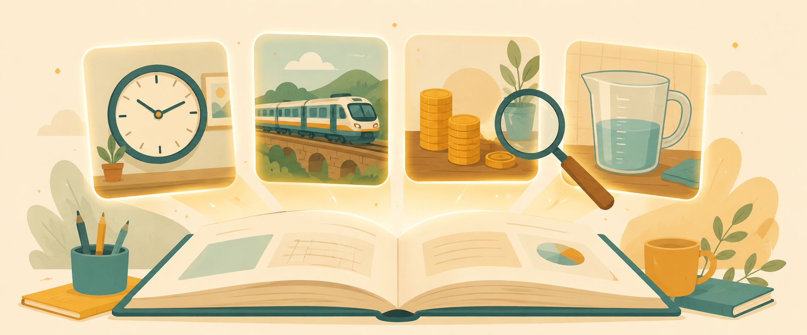
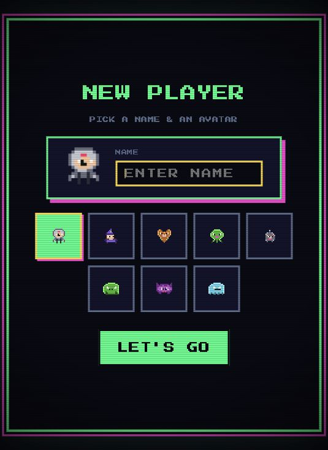
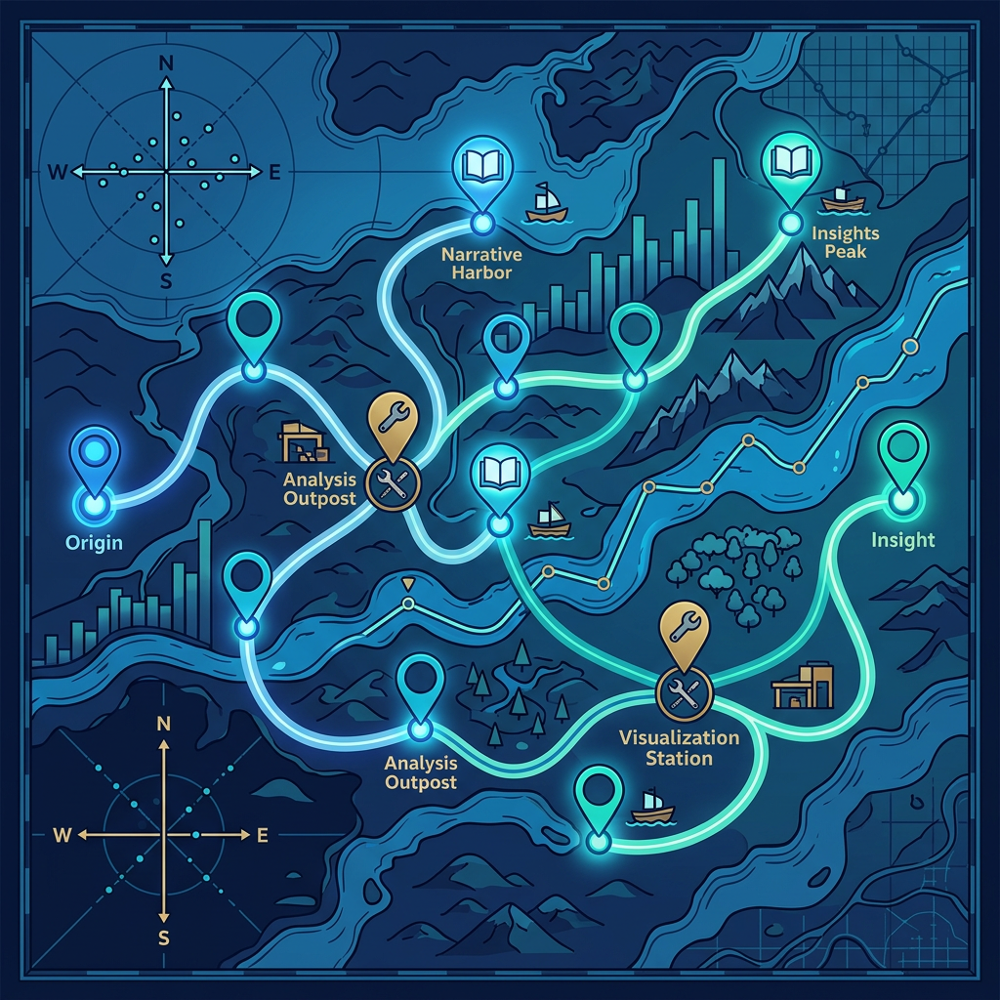
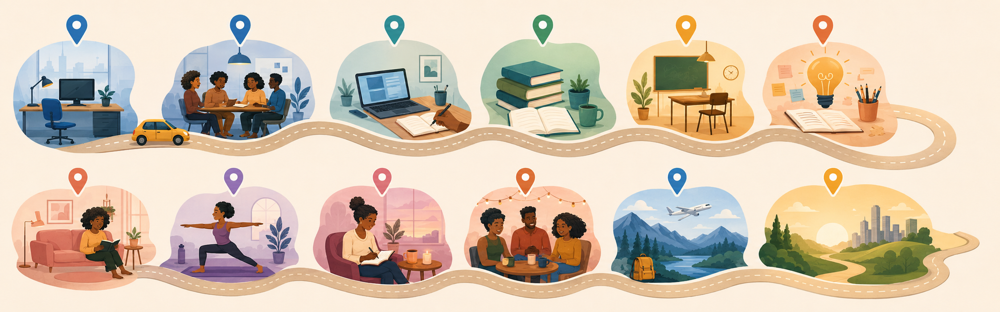

Interactive tools & resources
Built with curiosity, designed to teach.
Director of Academic Engagement, IU Luddy School
A collection of interactive tools built using AI for educators, coaches, researchers, and anyone who thinks learning should be smarter than a slide deck.






Tool archive
Twenty-seven tools, one teaching-centered practice.
Select any tool to preview its details, then open it from the spotlight panel.
27 of 27 tools
Design lens
What ties the archive together.
Practice
Three ways to read the work.
Connect
Follow the thinking behind the tools.
The portfolio is one part archive, one part learning lab. These are the places to keep reading and exploring.